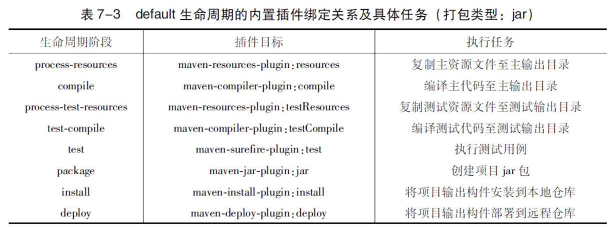

Maven 生命周期与插件¶
采用类似模板方法模式来完成生命周期工作；具体每个周期节点的内部实现是由各个插件完成。
例如，针对编译的插件有maven-compiler-plugin，针对测试的插件有maven-surefire-plugin等
Maven定义的生命周期和插件机制一方面保证了所有Maven项目有一致的构建标准，另一方面又通过默认插件简化和稳定了实际项目的构建。此外，该机制还提供了足够的扩展空间，用户可以通过配置现有插件或者自行编写插件来自定义构建行为
3.1 三套生命周期¶
分别为clean、default和site。
- clean生命周期的目的是清理项目
- default生命周期的目的是构建项目
- site生命周期的目的是建立项目站点
每个生命周期包含一些阶段（phase），这些阶段是有顺序的，并且后面的阶段依赖于前面的阶段，用户和Maven最直接的交互方式就是调用这些生命周期阶段
较之于生命周期阶段的前后依赖关系，三套生命周期本身是相互独立的
3.1.1 clean生命周期¶
clean生命周期的目的是清理项目，它包含三个阶段：
1. pre-clean执行一些清理前需要完成的工作
1. clean清理上一次构建生成的文件
1. post-clean执行一些清理后需要完成的工作
3.1.2 default生命周期¶
default生命周期定义了真正构建时所需要执行的所有步骤，它是所有生命周期中最核心的部分，其包含的阶段如下：
- validate
- initialize
- generate-sources
- process-sources
处理项目主资源文件。
一般来说，是对src/main/resources目录的内容进行变量替换等工作后，复制到项目输出的主classpath目录中
- generate-resources
- process-resources
- compile
编译项目的主源码
一般来说，是编译src/main/java目录下的Java文件至项目输出的主classpath目录中
- process-classes
- generate-test-sources
- process-test-sources
处理项目测试资源文件。
一般来说，是对src/test/resources目录的内容进行变量替换等工作后，复制到项目输出的测试classpath目录中
- generate-test-resources
- process-test-resources
- test-compile
编译项目的测试代码
一般来说，是编译src/test/java目录下的Java文件至项目输出的测试classpath目录中
- process-test-classes
- test
使用单元测试框架运行测试，测试代码不会被打包或部署
- prepare-package
- package
接受编译好的代码，打包成可发布的格式，如JAR
- pre-integration-test
- integration-test
- post-integration-test
- verify
- install
将包安装到Maven本地仓库，供本地其他Maven项目使用。
- deploy
将最终的包复制到远程仓库，供其他开发人员和Maven项目使用
3.1.3 site生命周期¶
site生命周期的目的是建立和发布项目站点，Maven能够基于POM所包含的信息，自动生成一个友好的站点，方便团队交流和发布项目信息
- pre-site执行一些在生成项目站点之前需要完成的工作
- site生成项目站点文档
- post-site执行一些在生成项目站点之后需要完成的工作
- site-deploy将生成的项目站点发布到服务器上
3.2 插件目标¶
为了代码复用等；每个插件有多个目标，每个目标对应一个功能。
比如：maven-dependency-plugin
dependency:analyze、dependency:tree和dependency:list。
这是一种通用的写法，冒号前面是插件前缀，冒号后面是该插件的目标
3.3 绑定¶
3.3.1 内置绑定¶
针对一些主要的生命周期阶段，与插件目标内置绑定；减少开发人员工作

注意，表中只列出了拥有插件绑定关系的阶段，default生命周期还有很多其他阶段，默认它们没有绑定任何插件，因此也没有任何实际行为。
3.3.2 自定义绑定¶
自己选择将某个插件目标绑定到生命周期的某个阶段上，这种自定义绑定方式能让Maven项目在构建过程中执行更多更富特色的任务。
一个常见的例子是创建项目的源码jar包，内置的插件绑定关系中并没有涉及这一任务，
因此需要用户自行配置。maven-source-plugin可以帮助我们完成该任务，
它的jar-no-fork目标能够将项目的主代码打包成jar文件，
可以将其绑定到default生命周期的verify阶段上，
在执行完集成测试后和安装构件之前创建源码jar包
<build> <plugins> <plugin> <groupId>org.apache.maven.plugins</groupId> <artifactId>maven-source-plugin</artifactId> <version>2.1.1</version> <executions> <execution> <id>attach-sources</id> <phase>verify</phase> <goals> <goal>jar-no-fork</goal> </goals> </execution> </executions> </plugin> </plugins> </build>
executions下每个execution子元素可以用来配置执行一个任务。该例中配置了一个id为attach-sources的任务，通过phrase配置，将其绑定到verify生命周期阶段上，再通过goals配置指定要执行的插件目标
当多个插件目标绑定到同一个阶段的时候，这些插件声明的先后顺序决定了目标的执行顺序
3.4 插件配置¶
- 命令行配置
很多插件目标的参数都支持从命令行配置，
用户可以在Maven命令中使用-D参数，并伴随一个参数键=参数值的形式，来配置插件目标的参数
- POM 中插件全局配置
有些参数不会更改，那就不需要在命令行中配置
例如，通常会需要配置maven-compiler-plugin告诉它：
编译Java 1.5版本的源文件，生成与JVM 1.5兼容的字节码文件
- 在POM中配置插件的时候，如果该插件是Maven的官方插件（即如果其groupId为org.apache.maven.plugins），就可以省略groupId配置
- 不推荐使用，省略一行没啥必要
- POM 中配置任务
略
3.5 插件信息获取¶
插件众多，功能众多；使用正确的插件并进行正确的配置，其实并不是一件容易的事
- 在线插件信息
基本上所有主要的Maven插件都来自
- Apache
可靠性更高
- http://maven.apache.org/plugins/index.html
- http://repo1.maven.org/maven2/org/apache/maven/plugins/
- Codehaus
有问题需研究源码
- http://mojo.codehaus.org/plugins.html
- 使用maven-help-plugin描述插件
- 在描述插件的时候，还可以省去版本信息，让Maven自动获取最新版本来进行表述
- 进一步简化，可以使用插件目标前缀替换坐标
- 如果想仅仅描述某个插件目标的信息，可以加上goal参数：
- 如果想让maven-help-plugin输出更详细的信息，可以加上detail参数
3.6 插件仓库¶
Maven会区别对待依赖的远程仓库与插件的远程仓库
当Maven需要的依赖在本地仓库不存在时，它会去所配置的远程仓库查找，可是当Maven需要的插件在本地仓库不存在时，它就不会去这些远程仓库查找
- Maven内置的插件仓库配置
<pluginRepositories>
<pluginRepository>
<id>central</id>
<name>Maven Plugin Repository</name>
<url>http://repo1.maven.org/maven2</url>
<layout>default</layout>
<snapshots>
<enabled>false</enabled>
</snapshots>
<releases>
<updatePolicy>never</updatePolicy>
</releases>
</pluginRepository>
</pluginRepositories>
- 很少需要自定义插件仓库，如果需要参考上面配置即可
3.7 插件解析¶
在用户没有提供插件版本的情况下，Maven会自动解析插件版本
首先，Maven在超级POM中为所有核心插件设定了版本，超级POM是所有Maven项目的父POM，所有项目都继承这个超级POM的配置，因此，即使用户不加任何配置，Maven使用核心插件的时候，它们的版本就已经确定了
如果用户使用某个插件时没有设定版本，而这个插件又不属于核心插件的范畴，Maven就会去检查所有仓库中可用的版本，然后做出选择；元数据在
3.7.1 插件前缀¶
mvn命令行支持使用插件前缀来简化插件的调用
插件前缀与groupId:artifactId是一一对应的，这种匹配关系存储在仓库元数据中
这里的仓库元数据为
Maven在解析插件仓库元数据的时候，会默认使用
也可以配置，让maven检查其他的 groupId 上插件仓库元数据
当Maven解析到dependency:tree这样的命令后，它首先基于默认的groupId归并所有插件仓库的元数据org/apache/maven/plugins/maven-metadata.xml；其次检查归并后的元数据，找到对应的artifactId为maven-dependency-plugin；然后结合当前元数据的groupIdorg.apache.maven.plugins；最后使用第7.8.3节描述的方法解析得到version，这时就得到了完整的插件坐标。如果org/apache/maven/plugins/maven-metadata.xml没有记录该插件前缀，则接着检查其他groupId下的元数据，如org/codehaus/mojo/maven-metadata.xml，以及用户自定义的插件组。如果所有元数据中都不包含该前缀，则报错。
4.1 聚合¶
多个子项目一起构建发布的时候，最好有一个聚合项目
POM.xml
<packaging>pom</packaging>
<modules>
<module>account-email</module>
<module>account-persist</module>
</modules>
对于聚合模块来说，其打包方式packaging的值必须为pom，否则就无法构建
modules，这是实现聚合的最核心的配置。
用户可以通过在一个打包方式为pom的Maven项目中声明任意数量的module元素来实现模块的聚合
聚合模块与其他模块的目录结构并非一定要是父子关系
4.2 继承¶
每个子项目模块在一起，出现大量重复依赖。不如利用继承来处理。
- 修改子模块的 Pom
<parent>
<!--定义父坐标-->
<artifactId>aaa</artifactId>
<groupId>com.lub.atom</groupId>
<version>0.0.1-SNAPSHOT</version>
<!--定义父项目的 POM 位置【可选选项】-->
<relativePath>../management/pom.xml</relativePath>
</parent>
[!note]
当项目构建时，Maven会首先根据relativePath检查父POM，
如果找不到，再从本地仓库查找。
relativePath的默认值是../pom.xml，也就是说，Maven默认父POM在上一层目录下
- 修改子模块 Pom
可选的操作
- 移除子模块的
- 如果确实父子定义不一样，那就需要显式定义，这一步就不要操作了
4.2.1 可继承的 POM 元素¶
- groupId：项目组ID，项目坐标的核心元素。
- version：项目版本，项目坐标的核心元素。
- description：项目的描述信息。
- organization：项目的组织信息。
- inceptionYear：项目的创始年份。
- url：项目的URL地址。
- developers：项目的开发者信息。
- contributors：项目的贡献者信息。
- distributionManagement：项目的部署配置。
- issueManagement：项目的缺陷跟踪系统信息。
- ciManagement：项目的持续集成系统信息。
- scm：项目的版本控制系统信息。
- mailingLists：项目的邮件列表信息。
- properties：自定义的Maven属性。
- dependencies：项目的依赖配置。
- dependencyManagement：项目的依赖管理配置。
- repositories：项目的仓库配置。
- build：包括项目的源码目录配置、输出目录配置、插件配置、插件管理配置等。
- reporting：包括项目的报告输出目录配置、报告插件配置等。
4.2.2 依赖管理-插件管理¶
可以保证所有子项目都使用的依赖，可以直接使用dependencies。
无法保证所有子项目都使用，使用下面管理起来：
Maven提供的dependencyManagement元素既能让子模块继承到父模块的依赖配置，又能保证子模块依赖使用的灵活性
在dependencyManagement元素下的依赖声明不会引入实际的依赖，不过它能够约束dependencies下的依赖使用
如果子模块不声明依赖的使用，即使该依赖已经在父POM的dependencyManagement中声明了，也不会产生任何实际的效果
[!note]
父POM中使用dependencyManagement声明依赖能够统一项目范围中依赖的版本，
当依赖版本在父POM中声明之后，子模块在使用依赖的时候就无须声明版本，
也就不会发生多个子模块使用依赖版本不一致的情况。这可以帮助降低依赖冲突的几率
[!note]
依赖范围的 import 介绍见上面
import范围依赖由于其特殊性，一般都是指向打包类型为pom的模块
如果有多个项目，它们使用的依赖版本都是一致的，则就可以定义一个使用dependencyManagement专门管理依赖的POM，然后在各个项目中导入这些依赖管理配置。
插件管理相同：
当项目中的多个模块有同样的插件配置时，应当将配置移到父POM的pluginManagement元素中。即使各个模块对于同一插件的具体配置不尽相同，也应当使用父POM的pluginManagement元素统一声明插件的版本。甚至可以要求将所有用到的插件的版本在父POM的pluginManagement元素中声明，子模块使用插件时不配置版本信息，这么做可以统一项目的插件版本，避免潜在的插件不一致或者不稳定问题，也更易于维护
4.3 构建顺序¶
反应堆（Reactor）是指所有模块组成的一个构建结构。对于单模块的项目，反应堆就是该模块本身，但对于多模块项目来说，反应堆就包含了各模块之间继承与依赖的关系，从而能够自动计算出合理的模块构建顺序。
[!note]
Maven按序读取POM，如果该POM没有依赖模块，那么就构建该模块，否则就先构建其依赖模块，如果该依赖还依赖于其他模块，则进一步先构建依赖的依赖
模块间的依赖关系会将反应堆构成一个有向非循环图（Directed Acyclic Graph,DAG），各个模块是该图的节点，依赖关系构成了有向边。这个图不允许出现循环，因此，当出现模块A依赖于B，而B又依赖于A的情况时，Maven就会报错。